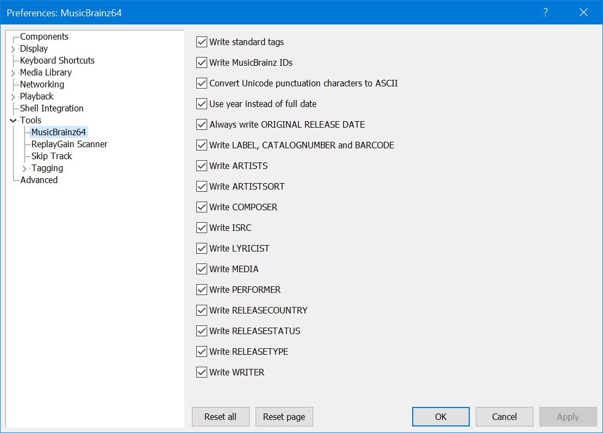
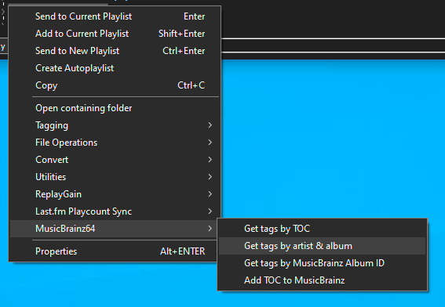

MusicBrainz64#
Note
As of version 2.1, 32bit is supported but the name is not changing.
Tag Mapping#
Before you consider using this to tag your files, it's important to note that it does
not strictly adhere to the Picard tag mappings as documented here.
If compatibility with MusicBrainz Picard or other taggers/players that make use of MBID data is
more important then you should probably avoid using this. More details of what this component
does and why can be found below.
Preferences#
These can be found under File>Preferences>Tools>MusicBrainz.

Usage#
This is very much a dumb tagger. You can only tag complete releases (or release
mediums) and all tracks must be in the same
order as they appear on MusicBrainz.
If you have incomplete releases, for example 2 discs out of 3, you'll need to update each disc individually.
You can right click any selection of tracks from a playlist or library viewer and use one of these 4 commands.

The TOC options only appear if the selected tracks are sourced from a CD rip. This is determined by
their exact length so if you've used an inferior CD ripper like Window Media Player, your
CD rips may not have these options.
The first option looks up releases by a discid calculated from the combination of track
count/lengths. If no matches are found, it's possible the release does exist on MusicBrainz
but no one has attached a discid just yet.
Note
When performing a Get tags by TOC lookup, LYRICIST, WRITER, PERFORMER and COMPOSER
are not available.
You can use the 2nd option to search for releases by Artist and Album name.
The 3rd option will let you do a more precise search by MusicBrainz Album ID if you know exactly
which release you want to use or if you've tagged the files before, an existing value will be read.
You may paste full release URLs in to the popup dialog and the server address will be stripped away.
When one or more matching releases have been found, you'll be presented with the main
Tagger Dialog (screenshot).
{kind=link}
From here, you can choose the best match for your selection. Note that while multiple releases
may match your selection count, they may have differing track orders and entirely different
tracks depending on region. Sometimes, the release from your country of origin may be
the worst match and you'll have to pick another! The releases list is read-only
but you can edit all other text fields and the Title column in the track list.
In the Disc Subtitle column, you can only edit the entry for track 1 of each disc. Edits
will be applied to all tracks from the same disc when tagging.
TOC submissions#
You should only use the Add TOC to MusicBrainz option if you are a MusicBrainz
editor and the selection is an actual CD in an optical drive. Submitted discids must be calculated
from sources that take pregap information in to account. This simply is not present in ripped files.
The Nerdy Stuff#
When it comes to tagging MBIDs, this component always follows the naming conventions used for Vorbis
comments regardless of the underlying file format/tagging sheme.
For example, it will write MUSICBRAINZ_ARTISTID instead of MUSICBRAINZ ARTIST ID to MP3 and M4A files.
Repeat that for all tags prefixed with MUSICBRAINZ.
The following differences affect ID3 tagging only:
DISCSUBTITLEis written toTXXX:DISCSUBTITLErather thanTSST (SET SUBTITLE)LABELis written toTXXX:LABELrather thanTPUB (PUBLISHER)MEDIAis written toTXXX:MEDIArather thanTMED (MEDIA TYPE)MUSICBRAINZ_RECORDINGIDis written toTXXX:MUSICBRAINZ_TRACKIDrather thanUFID://musicbrainz.orgRELEASECOUNTRYis written toTXXX:RELEASECOUNTRYrather thanTXXX:MUSICBRAINZ ALBUM RELEASE COUNTRYPERFORMERis written toTXXX:PERFORMERrather thanTMCL/IPLS
The reasoning for this is twofold:
foobar2000has never been able to read or write certain frames likeUFID/TMCL/IPLS.- And for frames that are recognised, it unifies tag display/search regardless of file format.
It's easier to search for
%LABEL% IS blahrather than%LABEL% IS blah OR %PUBLISHER% IS blahwhich is what you'd have to do if this wasPicardcompatible.
The main exception to the above is that ARTISTSORT and ALBUMARTISTSORT will be written differently depending
on format. See the changelog entry for 1.1.2.
Changes#
2.9#
- Minor bug fixes.
2.8#
- Fix
PERFORMERbug whereguest/additionalattributes may have been written without specifyingvocalor an instrument. Apologies for any inconvenience this may have caused.
2.7#
- Fix multi-value sorting bug affecting
COMPOSER/WRITER/PERFORMER.
2.6#
- Bump minimum requirements to
foobar20002.24andWindows 10. - Compiled with the latest
foobar2000SDK.
2.5#
- Fix bug where
ORIGINAL RELEASE DATEcould be written even when the preferences were disabled.
2.4#
- Fix tagger dialog bug where the
Track Artistcould not be previewed/edited before writing. Just to be clear, this only appears on various artist releases.
2.3#
- Work relationships are now parsed which adds support for writing
LYRICISTandWRITERtags. Check the mainPreferences>Tools>MusicBrainz64if you wish to disable this. It should also improve coverage forCOMPOSER. - Improve
PERFOMERhandling to include more vocalists.
2.2#
- Fix crash on shutdown which did not provide any popup but may have left crash dumps in your profile folder. These should be deleted to avoid confusion in the future. Apologies for the inconvenience.
2.1#
- Add support for
32bit. The name is remaining unchanged. - For existing
64bitusers, all preferences have been reset due to a large internal rewrite at the same time.
1.2.9#
- Fix bug where ascii punctuation replacements were not applied if enabled in the
Preferences. I can only apologise for the inconvenience this may have caused. v1.1.2added support for writingARTISTSORTandALBUMARTISTSORTand it was clearly stated thatfoobar2000would transform these toARTISTSORTORDERandALBUMARTISTSORTORDERwhen taggingmp3/m4a. Unfortunately I did not notice that this would not clear any existingARTISTSORTORDERandALBUMARTISTSORTORDERvalues so if you tagged the same tracks more than once, values would be appended instead of overwriting. This is now fixed.
1.2.8#
- Fix displaying/editing the disc subtitle for single disc releases.
1.2.7#
- No changes in functionality from previous release but some code has been modernised.
1.2.6#
- Use
;as multi-value separator when editingLABEL,CATALOGNUMBERandSecondary Typesin the tagger dialog.
1.2.5#
- Fixes a bug where the
Disc Subtitlecolumn was recently enabled for single disc releases but the value was not written unless it was a multi-disc release.
1.2.4#
- Fixes a bug introduced in
1.2.3where aPERFORMERcredited with the sameinstrumentatrecordingandreleaselevel would see thatinstrumentduplicated.
1.2.3#
COMPOSERandPERFORMERfrom therecordinglevel are now supported. The original implementation only supportedreleaselevel.
1.2.2#
CATALOGNUMBERandLABELcan now be multi-value. Previously, only the first value was written.
1.2.1#
- Minor bug fix.
1.2.0#
- All new options are enabled by default. Always check
File>Preferences>Tools>MusicBrainz. Previous settings for existing users should be preserved. - Support for writing
PERFORMERandCOMPOSERtags has been added. Note that these are not available when performingGet tags by TOClookups. - When writing
PERFORMERtoMP3, multi-valueTXXXframes are used. This is becausefoobar2000has never supportedTMCL/IPLS.
1.1.2#
- Support for writing
ARTISTSORTwas added, it's off by default.ALBUMARTISTSORTwill be written for various artist albums.- Note that
foobar2000will automatically transform these toARTISTSORTORDERandALBUMARTISTSORTORDERwhen writing toMP3/M4A. Component authors cannot control this. - For
MP3, they are written to theTSOPandTSO2frames as detailed here.
- Note that
1.1.1#
- Fix regression in
1.1.0where the state of thePreferencesApplybutton did not update to reflect when changes had been made.
1.1.0#
- Support for writing multi-value
ARTISTShas been added. It's off by default so check thePreferences. - An option to always write
ORIGINAL RELEASE DATEhas been added. Previously, it was only written if it differed fromDATE.
1.0.2#
RELEASETYPEnow supports multiple values.
1.0.1#
- Fix crash caused by not using new
SDKmethods correctly.
1.0.0#
- All dialogs have been updated to support
Dark Mode. - Some
Preferenceshave been updated.